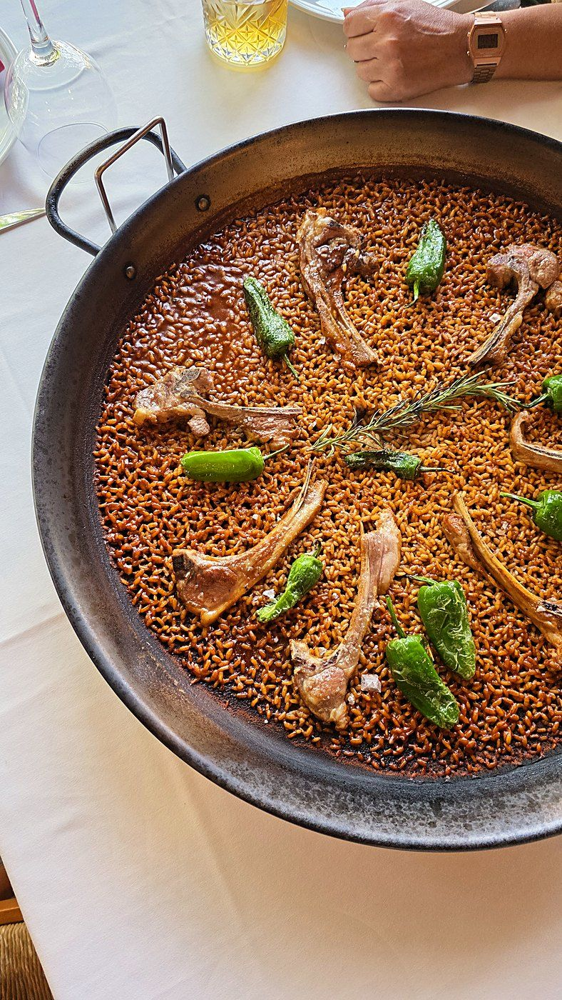
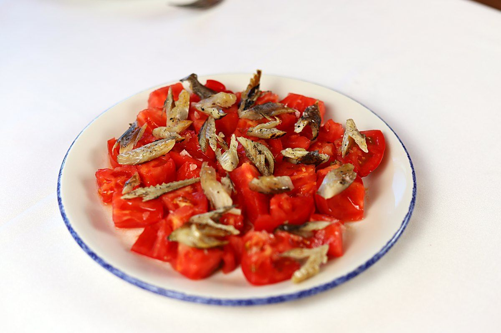
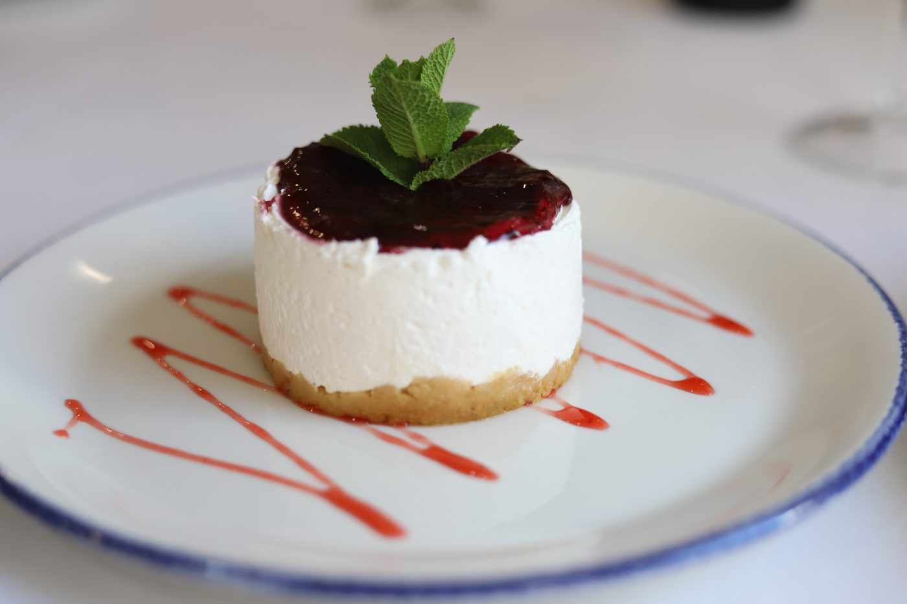
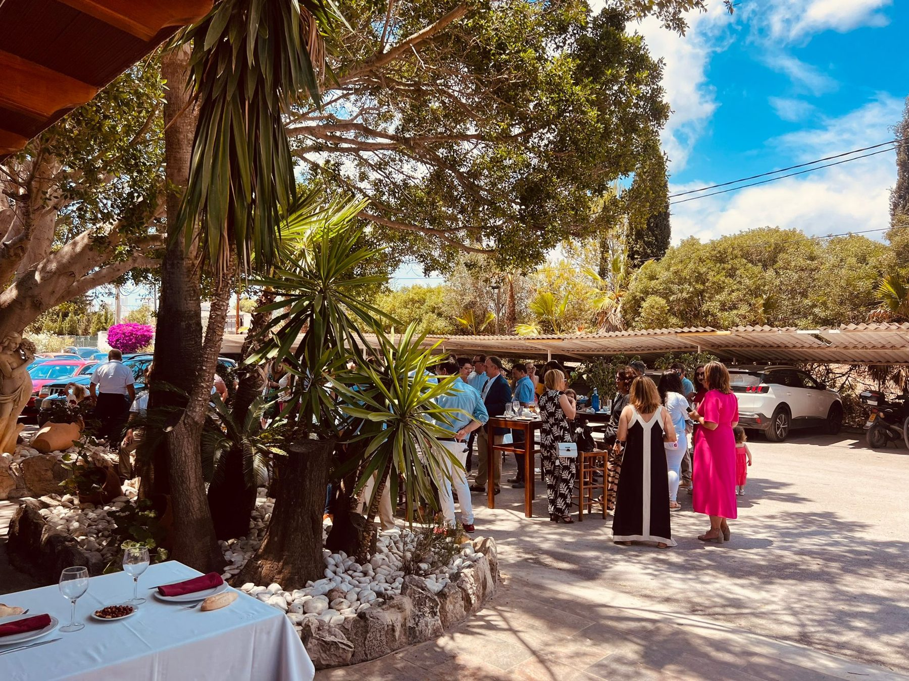
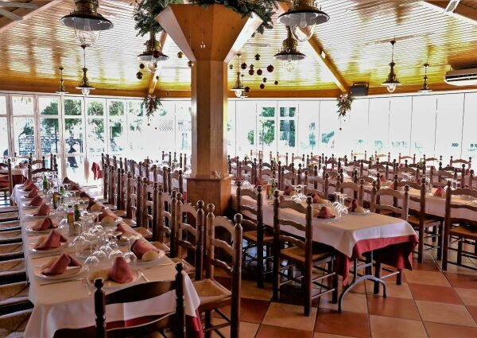
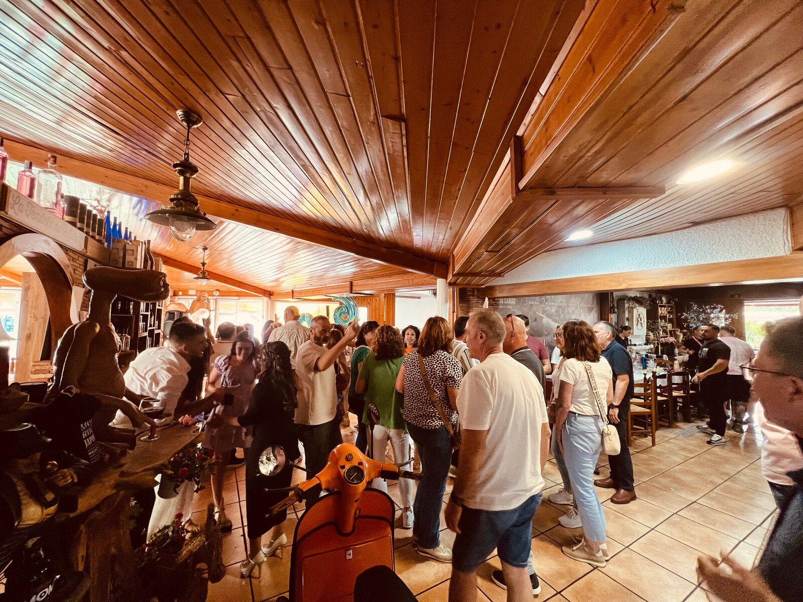
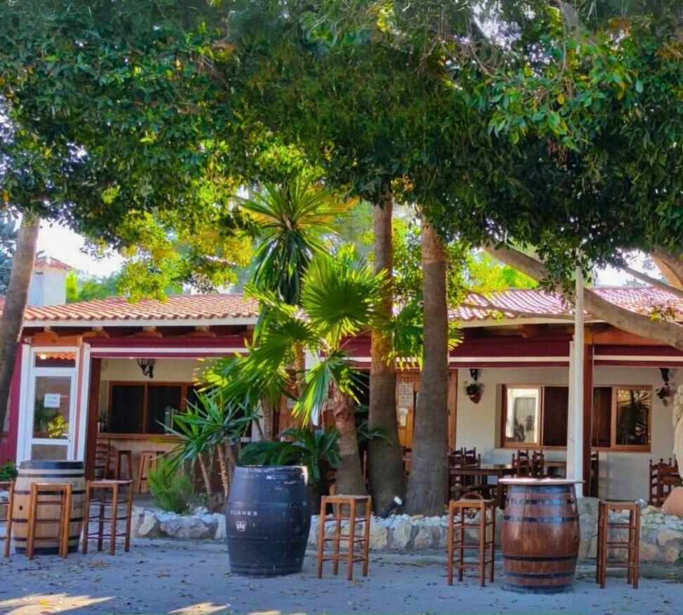

¿Dar mil vueltas para aparcar?
Aparcas gratis, junto a la puerta.
Llegas, aparcas y a la mesa. Sin parquímetros ni vueltas, también cuando vienes con niños.
Aparca gratis en la puerta, deja que los peques jueguen con monitor y disfruta de un arroz como debe ser, con producto de proximidad.

La abrieron dos hermanos, Rafa y Juanra, de un pueblecito de Granada, Huéscar. Llevan muchos años en Benidorm y esta casa se sigue llevando como una familia lleva su propia mesa. Hoy, Inma, hija de Juanra y sobrina de Rafa, se ha incorporado como directora de operaciones y representa la segunda generación de la familia.
Por eso cada vez vienen más familias, y ya hay varias generaciones que se sientan en nuestras mesas. Nos eligen por el trato, por la comida y por un equipo humano que quiere que te vayas un poco más feliz de lo que llegaste.
Con cariño, vuestros anfitrionesRafa e Inma
La Marina forma parte de Grupo Galera: gastronomía, ocio y diversión.
Comodidad, producto y trato. Esto es lo que más valoran quienes nos visitan.
Llegas, aparcas y a la mesa. Sin parquímetros ni vueltas, también cuando vienes con niños.
Ellos juegan acompañados; vosotros os quedáis a gusto con el café y la conversación.
Nuestros principales arroces: El Capo (secreto ibérico y alcachofa), El Jefe (chuletillas de cordero y pimientos de Padrón), la Abuela Pura (pulpo de roca), carabineros y Rafilla (pato confitado y medallón de foie).
Trato familiar y cercano, para que te sientas como en casa, también con grupos y niños.
Salones interiores y exteriores, con capacidades distintas para cada celebración: desde una comida íntima hasta grupos de 300 personas.
WhatsApp, llamada o Instagram.
Susy y la comida espectacular… el arroz está increíble y los entrantes perfectos. Sin duda volveremos.
Los mejores arroces que hemos probado. El servicio, rápido, simpático y eficiente. Volveremos y traeremos gente.
Espectacular. Arrocería de las de siempre, en un ambiente tranquilo y familiar. Calidad, calidad… arroz de pulpo, 100% recomendable.
Hemos ido varias veces en familia a las chuletas de cordero. El servicio muy agradable y el dueño es un crack, está pendiente de todo.
Comida y trato espectacular. El restaurante más recomendable de todo Benidorm sin duda. El arroz, un espectáculo.
Muy buena comida, trato muy amable. Que tengan zona y monitora para los nenes es un plus.
Una casa de arroces en Benidorm donde cuidamos cada detalle, del primer bocado al último café, para que salgas con una sonrisa. Tierra, mar y fuego: una sola mesa, hecha para compartir.
Verduras de temporada, alcachofas, tomate rosa de Altea y cordero segureño de la Sierra de Huéscar.
Bogavante, carabineros, cigalas y pulpo de roca: el mejor marisco, tratado con respeto en nuestros arroces.
Nuestra brasa y nuestro gran horno: entrecot, solomillo, chuletas de cordero y pata de pulpo, hechos despacio y a la antigua.
Arrastra el carrusel y descubre algunos de nuestros platos más especiales.
Recetas auténticas, producto de proximidad y un sabor que se recuerda. Para compartir, para repetir.

Plato estrellaCon chuletas de cordero segureño y pimientos de Padrón.
Tierra y fuego en un solo arroz.
Con pulpo de roca. La novedad de la carta.
Con toques cítricos. El mar, intenso.
Secreto ibérico, boletus y alcachofa confitada.
El mar en su versión más golosa.
¿Trabajas por la zona y vas con el tiempo justo? Aparcas en la puerta, te sientas y comes un menú completo con arroz de autor.



Los arroces se cobran por persona. Pregunta a nuestro equipo por alérgenos y sugerencias del día.
Precios orientativos, IVA incluido. Los platos pueden variar según el producto de proximidad. Avísanos si tienes alguna alergia o intolerancia.
Terraza arbolada, salón luminoso y todo preparado para disfrutar en familia o con amigos.



Hemos pensado la visita para que nadie se aburra y nadie se agobie.

Echa un vistazo a nuestra sala. Desliza, o pulsa la foto central para ampliarla.
Seáis 10 o 300, nos ocupamos del salón, del menú y del ritmo del día para que tú seas el anfitrión y no el organizador.




Únete gratis y entérate el primero. Queremos mimaros, porque vosotros sois la razón de que La Marina sea lo que es.
Te lleva 20 segundos. Sin spam, te lo prometemos.
Ya formas parte. Pronto tendrás noticias nuestras, con ofertas pensadas para ti.
Escríbenos por WhatsApp, llámanos o mándanos un mensaje por Instagram.
Partida Foia Manera, Camí del Palasiet, 31 · 03502 Benidorm, Alicante
Llama al local, dinos qué arroz quieres y para cuántas personas, y te confirmamos la hora de recogida.
Miércoles a domingo, de 10:00 a 18:00